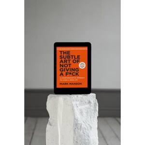

Library › Self-Improvement
The Subtle Art of Not Giving a F*ck — Summary & Key Lessons

A counterintuitive approach to living a good life — you have limited f*cks to give; spend them on what matters.
📖 OPEN THE FULL INTERACTIVE BREAKDOWN →🌐 Read it in Hindi, Hinglish, Gujarati, Tamil & 22 more languages — free, with audio.
💡 The Big Idea
Self-help's obsession with positivity backfires: constantly needing to feel good reminds you that you don't. Manson's alternative is subtractive — stop giving attention (f*cks) to things that don't matter so you can give them fully to the few that do. Life is suffering either way; the meaningful question isn't 'what do I want to enjoy?' but 'what pain am I willing to sustain?' Values you control (honesty, creativity) beat values you don't (popularity, status). You are not special, you are always choosing, and you are dying — three liberating facts.
🧠 The 7 Key Lessons
Lesson 1: The Backwards Law
Chapter 1: Don't Try
Alan Watts' backwards law: pursuing positive experience is a negative experience; accepting negative experience is a positive experience. Chasing happiness confirms you lack it; obsessing over wealth confirms you feel poor; needing everyone's approval guarantees anxiety. The culture's constant 'be happier, hotter, richer' messaging works by making you feel deficient — you buy the fix because the ad installed the wound. The subtle art is caring less about more: reserve your finite concern for a few chosen things, and the paradoxical result is the calm everyone else is chasing through accumulation.
📖 Example: Charles Bukowski — alcoholic, gambler, serial failure rejected for decades — finally succeeded with writing that embraced his own wreckage rather than concealing it. His tombstone reads 'Don't Try.' Manson's point isn't don't work (Bukowski wrote daily);… Read the full example →
⚡ Do this: List everything currently claiming your concern. Cross out what you wouldn't care about on your deathbed. What remains — usually 3–5 items — is your actual budget. Spend accordingly.
Lesson 2: Happiness Comes From Solving Problems
Chapter 2: Happiness Is a Problem
Life is an endless series of problems; happiness isn't found in their absence but in the solving. Solving problems creates new (hopefully better) problems: money problems become time-management problems become meaning problems — this is upgrade, not failure. Two ways people ruin this: denial (pretending the problems don't exist — feels fine, corrodes everything) and victim mentality (believing nothing can be done — outsources the solving to no one). The real question that defines your life: what pain do you WANT? Everyone wants the corner office; few want 70-hour weeks and office politics. Everyone wants the body; few want to love the gym's discomfort. The reward goes to whoever wants the associated cost.
📖 Example: Manson's own dream of rock stardom died not from lack of desire for the OUTCOME but lack of desire for the PROCESS: hauling gear, playing empty rooms, practicing scales for years. He wanted the view, not the climb. Meanwhile every actual rock star loved (or… Read the full example →
⚡ Do this: Rewrite one goal as its cost: not 'I want a business' but 'I want risk, rejection, and 60-hour weeks.' If the cost-version repels you, drop the goal without guilt — it was decoration.
Lesson 3: You Are Not Special — and That's Freedom
Chapter 3: You Are Not Special
The self-esteem movement taught everyone they're exceptional; the result is entitlement in two flavors: 'I'm great, so I deserve special treatment' (grandiosity) or 'I'm uniquely broken, so rules don't apply to me' (victimhood-as-specialness). Both refuse the same thing: being ordinary. But measuring your behind-the-scenes against everyone's highlight reel guarantees misery, and needing to be extraordinary makes ordinary life — where 99% of everyone's time is spent — unbearable. The liberation: accepting you're mostly average at mostly everything frees you to actually improve at the few things you commit to, and to enjoy basic pleasures without a scoreboard.
📖 Example: Manson's cautionary tale: a man he calls Jimmy, perpetually pitching visionary businesses, funded by delusion and other people's money, immune to feedback because admitting mediocrity would collapse the identity. Entitlement kept him busy and kept him broke.… Read the full example →
⚡ Do this: Name one area where you've refused to be a beginner because mediocrity felt intolerable. Do the beginner thing this week — badly, visibly, and on purpose.
Lesson 4: Choose Better Values
Chapter 4: The Value of Suffering
Since suffering is inevitable, the question is suffering FOR WHAT. Bad values: pleasure, material success, always being right, staying positive — all either outside your control, socially destructive, or false as compasses. Good values are reality-based, socially constructive, and immediate/controllable: honesty, vulnerability, curiosity, charity, creativity. The test: popularity depends on others' opinions (you'll contort forever); honesty depends only on you (achievable every hour of every day). Self-improvement isn't adding wins — it's prioritizing better values: choosing better things to give a f*ck about, which upgrades the problems you get, which upgrades the life you live.
📖 Example: Dave Mustaine, kicked out of Metallica, founded Megadeth and sold 25 million albums — and still described himself as a failure, because his metric was 'beat Metallica' (uncontrollable, comparative). Pete Best, dumped by the Beatles right before fame, rated… Read the full example →
⚡ Do this: Extract your operating values from your last month's biggest emotions (what did you get angriest/proudest about?). Replace one comparative, uncontrollable value with a controllable one — and re-judge last month by it.
Lesson 5: You Are Always Choosing
Chapter 5: You Are Always Choosing
The difference between crushing misery and empowering challenge is often just the sense of chosen-ness: run a marathon voluntarily and it's a peak experience; be forced to run one and it's torture — same 42 km. Manson's move: take responsibility for EVERYTHING in your life, including what isn't your fault. Fault is past tense; responsibility is present tense — 'not my fault' and 'still my response to choose' coexist. The victim posture outsources your agency to whoever harmed you, doubling their damage. With great responsibility comes great power: the moment you own the response, options appear that blame had hidden.
📖 Example: Manson's near-parody example: a man dumped by his girlfriend can spend years 'because of her' — or own his responses: his moping, his refusal to grow, his choice to keep retelling the story. William James — suicidal, unemployable, disabled by illness — ran a… Read the full example →
⚡ Do this: Take your most persistent grievance and split the ledger: their fault (past, fixed) vs. your responsibility (present, live). Act on one item from your side today.
Lesson 6: Be Wrong Often — Certainty Is the Enemy
Chapter 6: You're Wrong About Everything
Growth is iterative wrongness: today's you is wrong about slightly fewer things than yesterday's. Certainty is the enemy — it halts revision, breeds fragility, and licenses cruelty (history's worst acts came from people certain they were right). Manson's law of avoidance: the more something threatens your identity, the more you'll avoid it — which is why 'I'm not a writer' protects against writing and failing. The fix: hold identities loosely ('I'm someone who writes' beats 'I am a great writer'), interrogate yourself (What if I'm wrong? What would it mean?), and treat beliefs as hypotheses under permanent review. The goal isn't to be right; it's to be less wrong tomorrow.
📖 Example: Manson's account of a man who, certain his wife was cheating (she wasn't), destroyed the marriage collecting evidence for a crime that never happened — certainty manufacturing its own catastrophe. Reverse case: every scientist ever, professionally rewarded… Read the full example →
⚡ Do this: Pick a belief you defend emotionally. Write the three strongest arguments against it, steel-manned. Then answer honestly: what would change in my life if I were wrong — and is that what I'm actually protecting?
Lesson 7: The Importance of Saying No — and Memento Mori
Chapters 8–9: The Importance of Saying No / ...And Then You Die
Commitment IS the freedom: rejecting alternatives is what gives choices meaning — a relationship, craft, or cause you can't leave costlessly is the only kind that pays deep returns. Boundaries are the architecture of love: in healthy relationships, both people own their own problems and decline to take over the other's; rescuing and blaming are the twin toxins. And behind everything, death: Manson closes with Becker's insight that most human misery comes from immortality projects — frantic attempts to matter forever. Honest confrontation with mortality burns off the trivial: you are going to die, therefore almost nothing you're anxious about matters, therefore the few things that do matter, matter completely.
📖 Example: Manson's pilgrimage to the Cape of Good Hope: standing at the cliff-edge where he'd once fantasized about ending things years earlier, he felt the inversion — death contemplated honestly didn't darken life, it prioritized it. His friend's early death, the… Read the full example →
⚡ Do this: Practice one clean no this week — no excuse, no essay. And run the death audit: if this were your last year, which current commitments survive? Begin exiting one that doesn't.
✅ 5-Step Action Plan
- Budget your f*cks: cross off everything that fails the deathbed test.
- Choose goals by their costs — keep only the pain you're willing to love.
- Swap one uncontrollable value (status, approval) for a controllable one.
- Split fault from responsibility on your oldest grievance; act on your side.
- Say one clean no, and let mortality set this year's priorities.
💬 Best Quotes from The Subtle Art of Not Giving a F*ck
- “Who you are is defined by what you're willing to struggle for.”
- “The desire for more positive experience is itself a negative experience.”
- “Action isn't just the effect of motivation; it's also the cause of it.”
Interactive version: mark lessons as read, listen in your language, share quote cards.